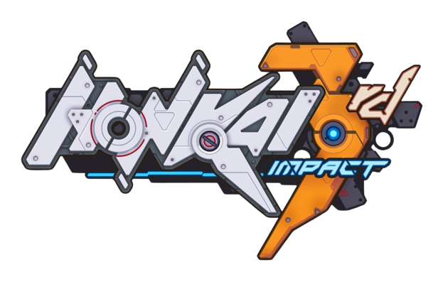

| Games |
Short Description |
 |
Genshin Impact is an open-world action RPG that allows the player to explore a fantasy world called Teyvat, where seven elemental gods rule over seven nations. The player can control one of four interchangeable characters in a party, each with their own unique skills and abilities. The player can also interact with various NPCs, complete quests, collect items, and fight enemies and bosses. |
|
Honkai: Star Rail is a space fantasy RPG that follows the journey of a special traveler who boards the Astral Express, a train that travels across the galaxy. The player can meet new companions who inherited the will of the Trailblaze, a mysterious force that guides them to explore different worlds and civilizations. The game features a turn-based combat system that involves using Aether Spirits, creatures that can manipulate elements and reality. |
|  |
Honkai Impact 3rd is an action game set in a post-apocalyptic world, where players can take on the role of various Valkyries and fight against enemies using a variety of weapons and skills. The game features characters from the previous game, including Kiana Kaslana, Raiden Mei, and Bronya Zaychik. The game has a story mode that follows the main plot, as well as various side modes such as co-op raids, open-world exploration, and events. |